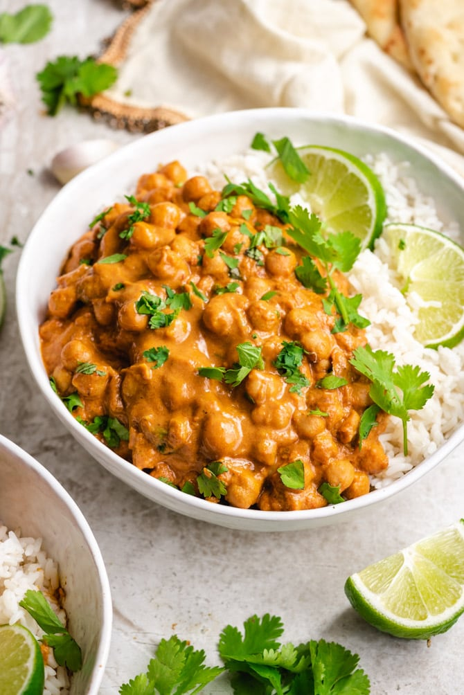

Homepage
Chickpea Curry

Description
Mindblowing chickpea curry. It doesn't get better than this.
Ingredients
- 2 tbsp oil
- 1 onion, diced
- 1 tsp fresh or dried chili, to taste
- 9 garlic cloves
- thumb-sized piece of ginger, peeled
- 1 tbsp ground coriander
- 1 tbsp garam masala
- 2 tbsp tomato pureé
- 2 x 400g cans chickpeas, drained
- 400g can chopped tomatoes
- 100g creamde coconut
- 1/2 small pack coriander, chopped, plus extra to garnish
- 100g spinach
- Cooked rice
- Naan
Steps
- To make the paste, heat a little of the 2 tbsp oil in a frying pan, add 1 diced onion and 1 tsp fresh or dried chilli, and cook until softened, about 8 mins.
- In a food processor, combine 9 garlic cloves, a thumb-sized piece of peeled ginger and the remaining oil, then add 1 tbsp ground coriander, 2 tbsp ground cumin, 1 tbsp garam masala, 2 tbsp tomato purée, ½ tsp salt and the fried onion. Blend to a smooth paste – add a drop of water or more oil, if needed.
- Cook the paste in a medium saucepan for 2 mins over a medium-high heat, stirring occasionally so it doesn’t stick.
- Tip in two 400g cans drained chickpeas and a 400g can chopped tomatoes, and simmer for 5 mins until reduced down.
- Add 100g creamed coconut with a little water, cook for 5 mins more, then add ½ small pack chopped coriander and 100g spinach, and cook until wilted.
- Garnish with extra coriander and serve with rice or dhal (or both).